29 Dez · Pré-Réveillon
Samba dos Lençóis
O Maranhão é terra de tambores e batuques. A travessia abre com samba no pé, gogó preparado e a vila inteira na roda.
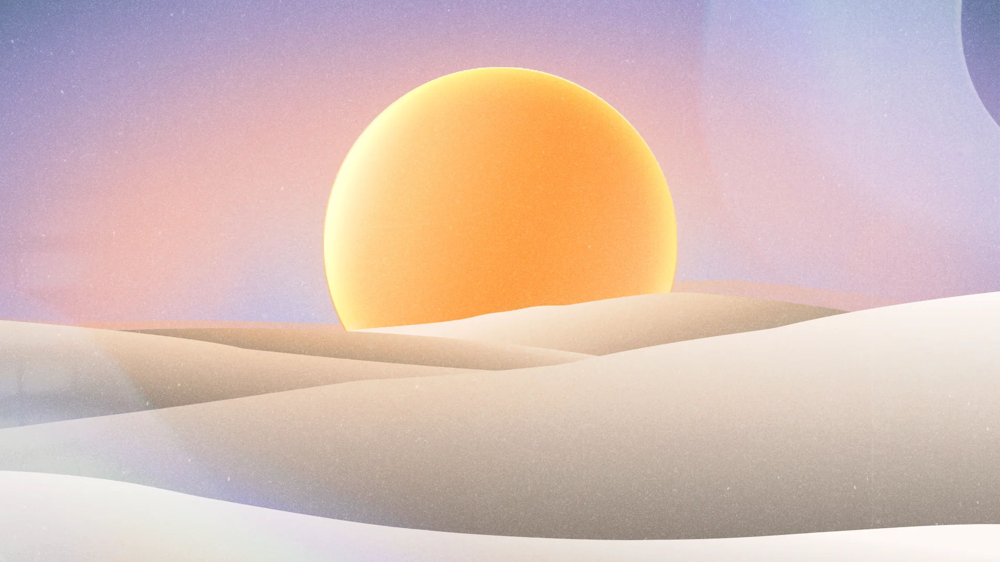
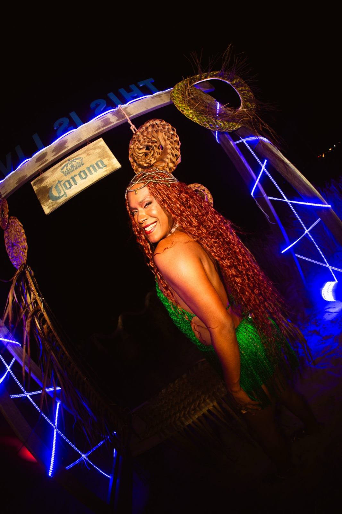
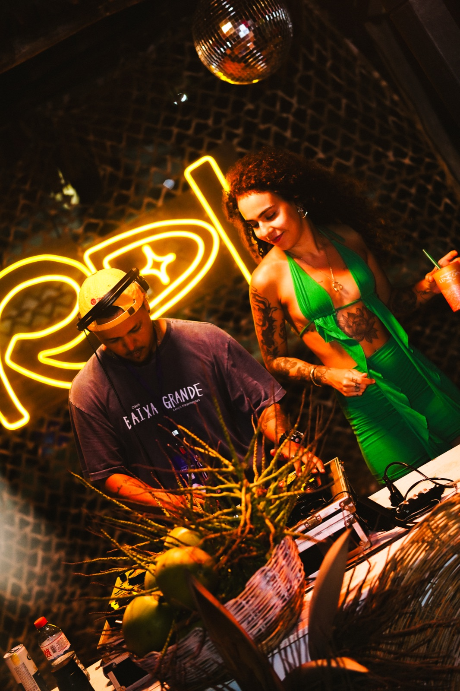
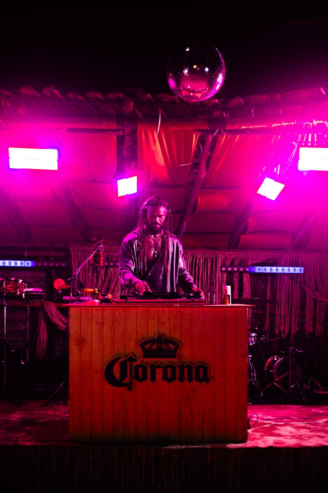
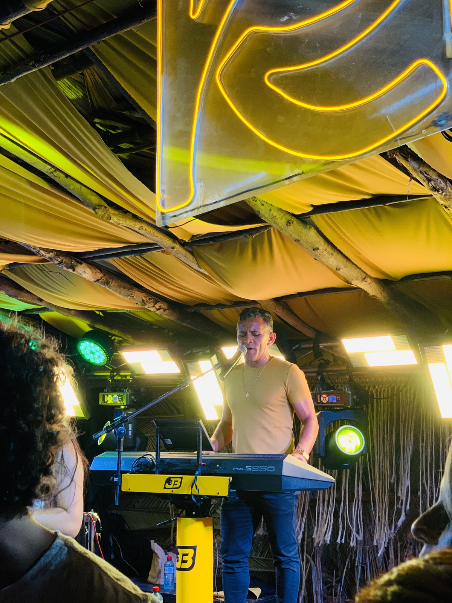
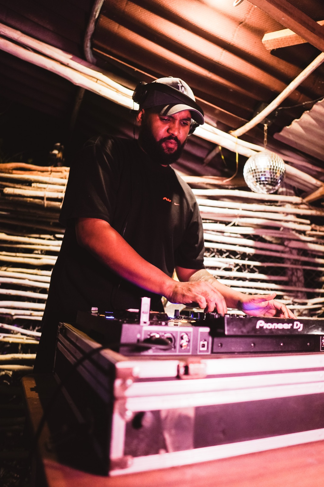
✦ Atins · Lençóis Maranhenses · 29, 30, 31 Dez e 02 Jan
Lote 2 à venda na Sympla — o valor sobe na próxima virada de lote
O Manifesto
Existe um lugar onde o rio encontra o mar, as dunas guardam lagoas de água doce e o tempo corre no ritmo do vento.
Atins não é um destino. É uma passagem. E virar o ano aqui é atravessar — de barco, de pé na areia, de coração aberto — para o seu melhor ano.
O Réveillon dos Lençóis transforma a agenda de festas em uma travessia: dias de sol, lagoa e vento, noites de música ao pé da duna, e uma virada que ninguém esquece. Sem asfalto, sem pressa, sem cerimônia — só o essencial, feito com capricho, no coração dos Lençóis Maranhenses.
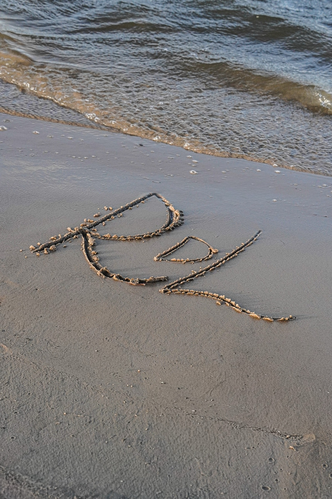
A Experiência
Não é só uma festa de ano novo. É um ciclo completo de dias e noites, pensado para você viver os Lençóis por inteiro.
Dunas, lagoas e o encontro do Rio Preguiças com o mar. O cenário natural mais impressionante do Brasil como palco da sua virada.
Uma vila de pescadores que abraça quem chega. Aqui você faz amigo na fila do barco, dança com desconhecido e sai com família nova.
DJs e artistas que entendem o lugar: do sunset ao nascer do sol, a trilha sonora acompanha o vento — sem pressa e sem pausa.
Aqui você entra inteiro, e sai diferente. A travessia das águas é o ritual de encerrar um ciclo e abrir o próximo com o pé na areia.
A Travessia
Cada festa é uma etapa da travessia. Juntas, elas contam a história da sua virada em Atins.
O Maranhão é terra de tambores e batuques. A travessia abre com samba no pé, gogó preparado e a vila inteira na roda.
Esporte, bem-estar, gastronomia local, feira criativa, massagem e muita música de frente pro mar. Acesso gratuito.
Dois atos: o último pôr do sol do ano dentro do Parque e a Festa da Virada, da meia-noite ao amanhecer na praia de Atins.
Forró arrochado, piseiro e uma energia que só o Sabadão tem. Quem viveu a edição passada sabe do que a gente tá falando.
Nossa Programação
Por entre as dunas de areias brancas e os espelhos de águas cristalinas dos Lençóis Maranhenses, faremos uma travessia inesquecível.
Seremos atravessados pelo elemento mais poderoso, o elemento da vida. Sejam bem-vindos à Travessia das Águas.
Através da música, do esporte, de ações de bem-estar e de responsabilidade social e ecológica, mergulhamos nessa experiência única: compartilhando sorrisos, abraços e momentos inesquecíveis, celebrando um novo ciclo na praia mais bonita do Brasil.
O Maranhão é terra de tambores e batuques, e numa festa de música brasileira não poderia faltar o nosso tão bom e amado samba. Preparem o gogó e o samba no pé: essa noite promete.
Atividades esportivas, momentos de reconexão, ações de bem-estar e muita música. O nosso bar de praia oferece também o melhor da gastronomia local, drinks refrescantes, feira criativa, massagens e muito mais. E o melhor: o acesso a esse espaço é gratuito.
Porque tudo que é bom, a gente repete. Mais um dia de sol, música e mar na frente para aquecer a virada.
Viver o paraíso é algo mágico. E em um lugar de tantos encantos, dividimos esse dia em dois momentos super especiais, pensados com todo carinho para que você possa mergulhar nesse infinito.
Uma imersão no Parque Nacional dos Lençóis Maranhenses para celebrar o último pôr do sol do ano desse paraíso. Um momento místico, de muita conexão, onde o movimento das areias parece um convite para mudanças e reflexões, lembrando que o movimento atrai. Com ativações de bangalôs, finger foods, mesas de frutas e hidratação, para uma experiência sensorial confortável e completa.
✦ Não é permitido o porte e o consumo de bebidas alcoólicas dentro do Parque.
Depois de contemplar, vamos extravasar. Celebramos a chegada do novo ano da melhor forma possível: com muita música e o astral lá em cima. Veremos o dia amanhecer na praia de Atins, a praia mais bonita do Brasil, com apresentações exclusivas de grandes artistas misturando os ritmos que são a cara da nossa cultura nortista e nordestina: reggae, brasilidades e, claro, uma pitada de house music pra balançar.
A despedida desse espaço aproveitando o melhor que ele pode oferecer: um bom banho de rio e pé na areia. Além, claro, de muita música e ações de bem-estar.
Quem viveu a edição passada sabe do que a gente tá falando. O Sabadão é um evento antropológico que movimenta a região dos Lençóis na alta e na baixa temporada, com muito forró arrochado, piseiro e uma energia que só o Sabadão tem.
Programação sujeita a ajustes. Line ups completos e horários dos atos da virada serão confirmados nas nossas redes.
Garanta seu ingresso ✦Memórias
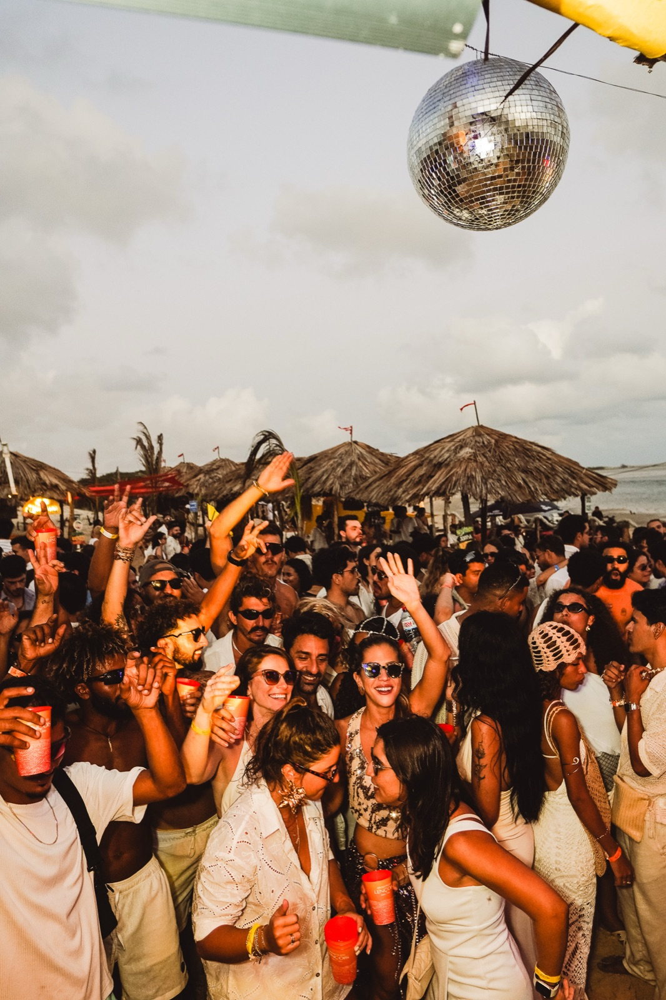
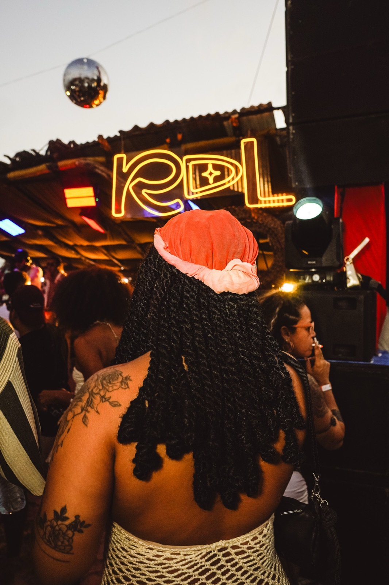
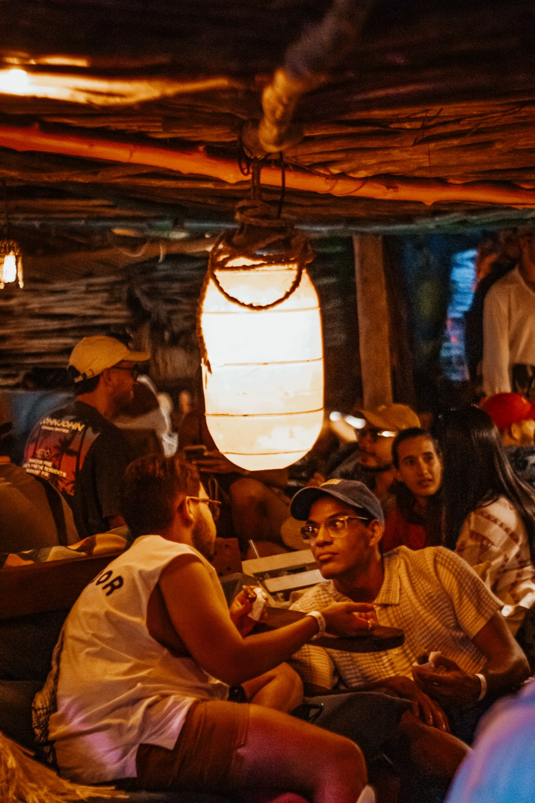
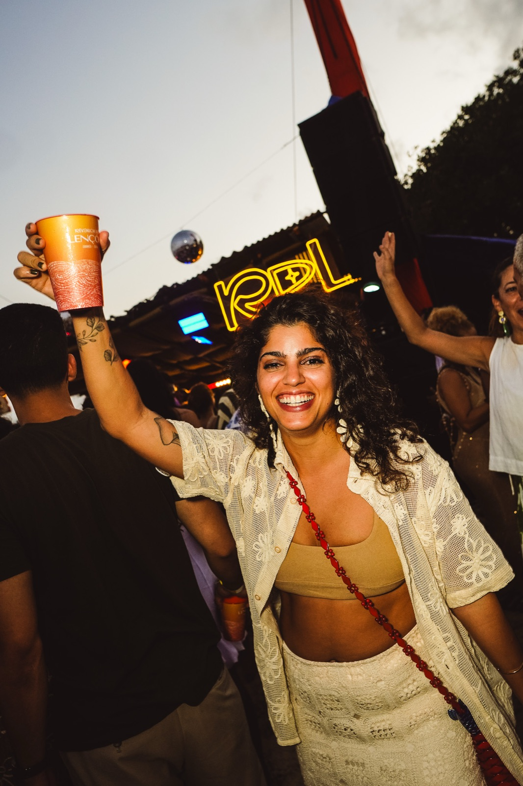
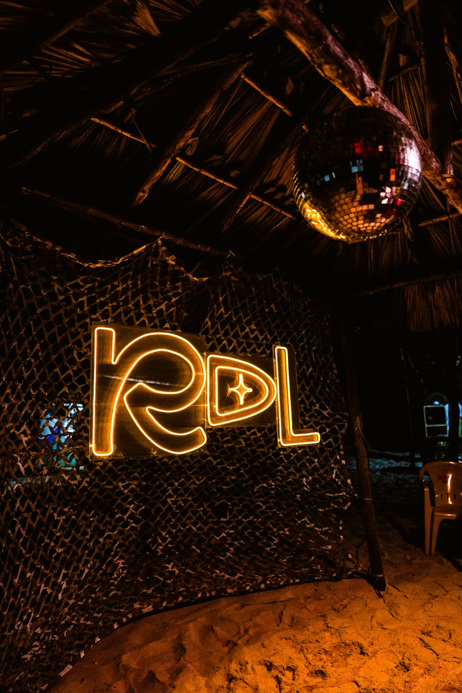
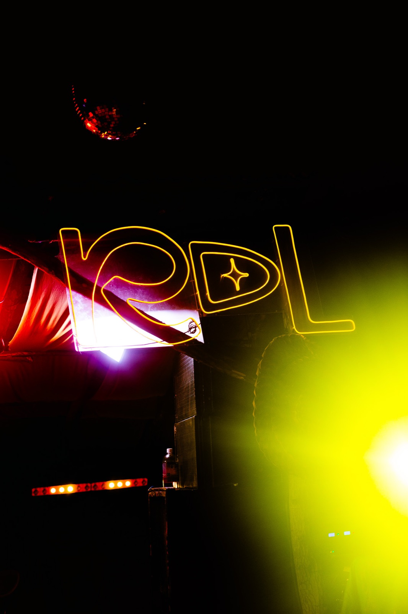
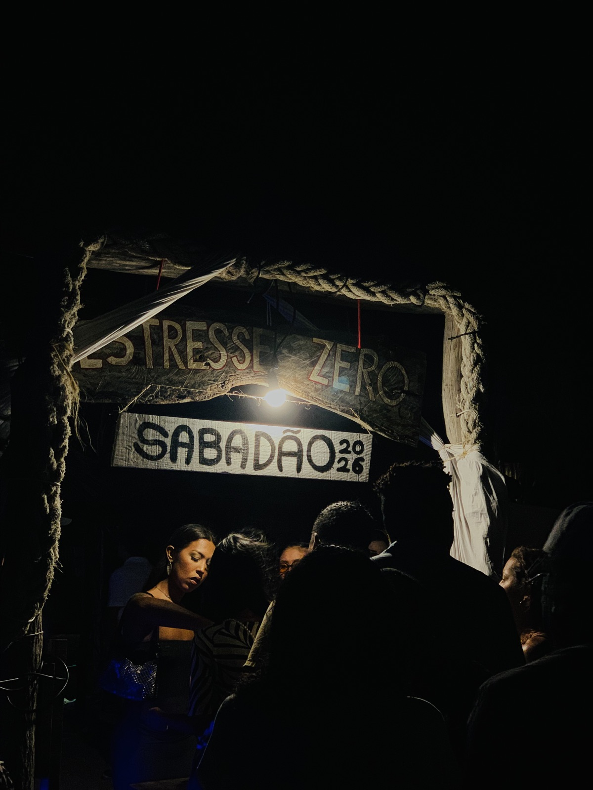
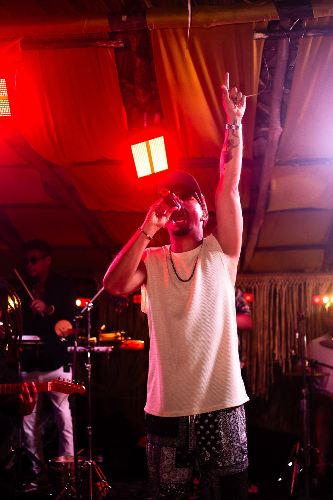
← Deslize para ver mais →
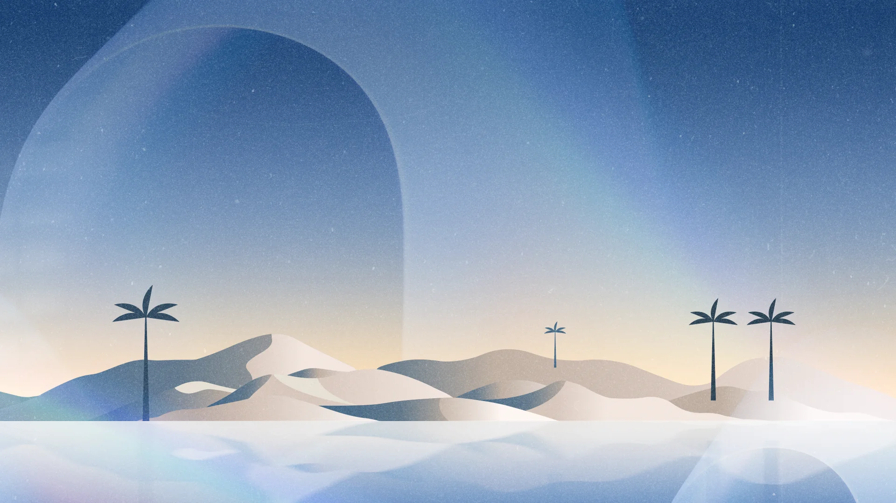
Ingressos
Cada virada de lote, o valor sobe. Quem garante antes, paga menos — e ainda escolhe com calma pousada, voo e travessia. Ingressos limitados pela capacidade da vila.
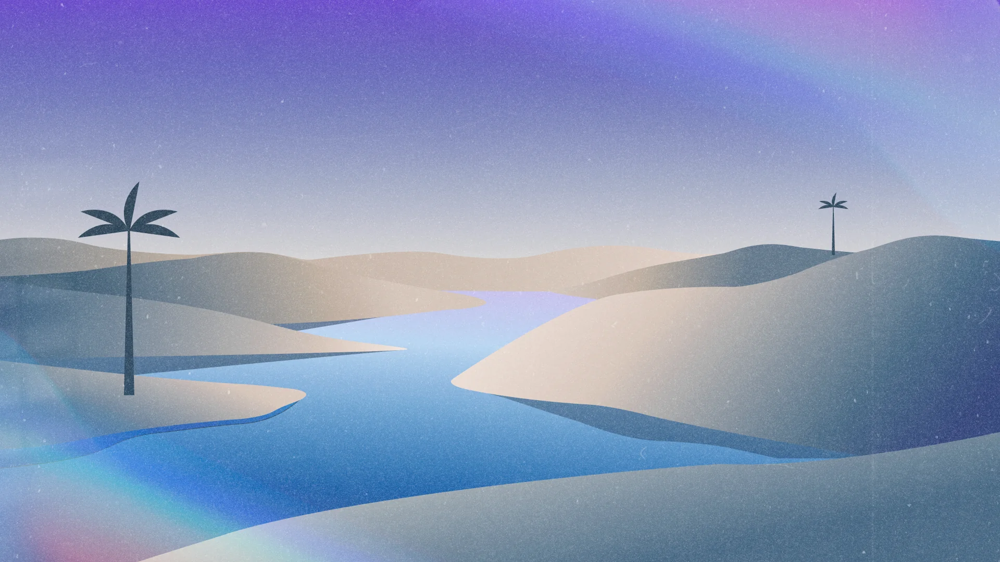
Como Chegar
Atins fica no delta entre o Rio Preguiças e o mar, na borda do Parque Nacional dos Lençóis Maranhenses. Não tem asfalto até aqui — e é exatamente isso que protege a magia.
Capital do Maranhão, com voos diretos das principais capitais do país.
Cerca de 4h de carro ou transfer — a porta de entrada dos Lençóis.
Uma hora de travessia entre manguezais e dunas até a vila de Atins. A viagem já vale o ingresso.
Chegou. Agora é só viver a virada. A gente cuida do resto.
Parceira Oficial
A Explore Atins é a parceira oficial do RDL para você chegar, circular e voltar sem preocupação — do aeroporto em São Luís até a areia da festa.
De carro ou quadriciclo, entre sua pousada e as festas da travessia. Valor fixo por pessoa, por trecho — sem surpresa no fim da noite.
Saída do aeroporto ou do seu hotel em São Luís até Barreirinhas, com horário casado com a travessia de lancha.
A descida do Rio Preguiças até a vila. Feche o pacote completo São Luís → Atins de uma vez e chegue sem pensar em logística.
Os transfers para as festas funcionam durante toda a programação. Pacotes São Luís → Barreirinhas → Atins são montados sob medida — quanto antes reservar, melhor o horário.
Dúvidas Frequentes
A programação completa dos quatro dias está publicada na seção Programação. Os dias de Bar da Praia têm acesso gratuito; o formato dos ingressos para as festas está detalhado na página oficial da Sympla.
Atins tem pousadas charmosas, casas de temporada e campings — mas a capacidade da vila é limitada e o fim de ano lota com meses de antecedência. Garanta o ingresso primeiro e reserve a hospedagem logo em seguida; indicamos parceiros para quem já tem ingresso.
A Explore Atins, parceira oficial do RDL, faz o transfer entre pousadas e festas de carro ou quadriciclo por taxa fixa de R$ 20 por pessoa, por trecho. Ela também monta pacotes de transfer terrestre São Luís → Barreirinhas e lancha até Atins, com valores a combinar.
Dá — e é ainda melhor. Muita gente fecha casa e lancha em grupo. Começar a planejar cedo é o segredo: por isso abrimos as vendas com tanta antecedência.
As vendas acontecem por lotes, com valores progressivos, pela Sympla. Use somente o link oficial deste site e da bio do nosso Instagram — desconfie de qualquer outro canal.
Melhor ainda: não existe primeira vez melhor do que virar o ano dentro do parque. Aproveite os dias antes e depois do evento para conhecer as lagoas, fazer a travessia até Lagoa Bonita e viver Atins com calma.
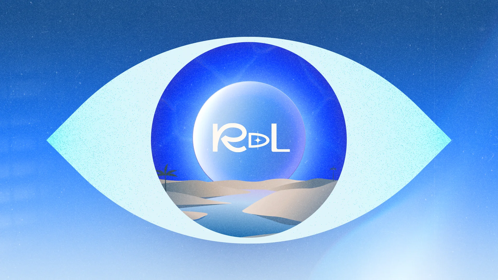
A pré-venda esgotou em dias. O lote atual é limitado. E dezembro chega mais rápido do que parece.
Garanta seu ingresso ✦